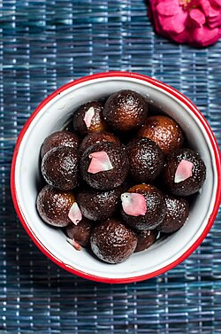
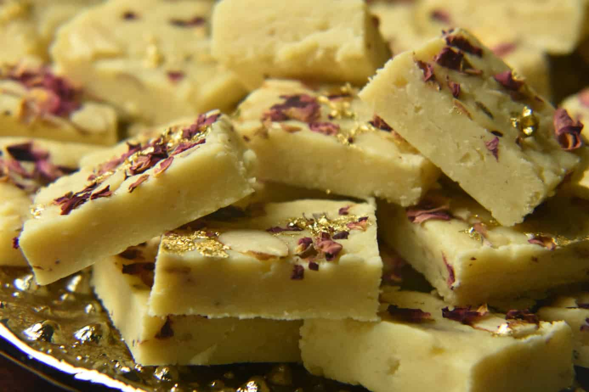

Gulab Jamun
- Ingredients
- Suger
- oil
- bread
Recipe
- Prepare Dough – Mix milk powder, all-purpose flour, baking soda, ghee, and milk to form a soft dough. Rest for 10 minutes.
- Shape & Fry – Make small, crack-free balls and deep-fry on low heat until golden brown.
- Make Sugar Syrup – Boil sugar and water until sticky, then add cardamom powder and saffron/rose water.
- Soak & Serve – Add fried jamuns to warm syrup and let them soak for 1-2 hours before serving. 😋🍯

Barfi
- Ingredients
- Suger
- oil
- bread
Recipe
- Prepare Chhena – Boil milk, add lemon juice to curdle it, strain, and knead into a soft dough.
- Shape & Boil – Make small, smooth balls and boil in a sugar syrup made with water and sugar.
- Simmer & Cook – Cover and cook on medium heat for 15-20 minutes until the rasgullas double in size.
- Cool & Serve – Let them cool in the syrup, then serve chilled for the best taste. 😋🍯
